数据库入门
基础概念
- 数据类型: 每个表列都有相应的数据类型，允许该列中可以存储的数据。
数值类型: 包括严格数值数据类型(INTEGER、SMALLINT、DECIMAL和NUMERIC)，以及近似数值数据类型
(FLOAT、REAL和DOUBLE PRECISION)。关键字INT是INTEGER的同义词，关键字DEC是DECIMAL的同义词。
日期和时间类型:有 DATETIME(YYYY-MM-DD HH:MM:SS)、TIMESTAMP(YYYYMMDD HHMMSS)、和DATE(YYYY-MM-DD)、
TIME(HH:MM:SS)、YEAR(YYYY)。
字符串类型: 包含CHAR、VARCHAR、BINARY、VARBINARY、BLOB、TEXT、ENUM和SET；
CHAR定长字符串，特点:
存储空间固定。
长度不够时内部存储使用空格填充。
若字段本身末尾存在空格，检索出来自动截断末尾空格（因为分不清空格是字段含有的还是填充产生的）。
若字段本身前端存在空格，是不会截断的。
当输入的字符长度超过指定长度时，char会截取超出的字符。
VARCHAR变长字符串，特点:
存储空间不固定，根据字段长度决定。
需要额外的1个或2个字节记录字符串的长度，字符串长度小于255字节使用1个字节，否则使用2个。
最大容量为 65535 字节（这里单位是字节而非字符)
如果列可以为null，则需要额外的一个字节作为标志。
最大长度 = 字段长度 + [长度记录：(1或2) B] + [null标志位：1B]
CAHR(M)中M的范围是0~255，VARCHAR(M)中M的范围是0~65535；M代表字符个数，故VARCHAR最大容量为65535字节。
对于VARCHAR, 4.0版本以下：varchar(n)，指的是n个字节，如果存放UTF8汉字时，只能存n/3个（每个汉字3字节）。
5.0版本以上：varchar(n)，指的是n个字符，无论存放的是数字、字母还是UTF8汉字（每个汉字3字节），都可以存放n个，
考虑到VARCHAR最大容量，此时n的大小受制于字符集，对于UTF-8，n最大为(65535-2)/3=21844；
对于GBK，n最大为(65535-2)/2=32766。
BINARY 和 VARBINARY类似于 CHAR 和 VARCHAR，存储的是字节字符串，即二进制形式子串；
BLOB 是一个二进制大对象，可以容纳可变数量的数据。有 4 种 BLOB 类型：TINYBLOB、BLOB、MEDIUMBLOB 和 LONGBLOB。
它们区别在于可容纳存储范围不同；
有 4 种 TEXT 类型：TINYTEXT、TEXT、MEDIUMTEXT 和 LONGTEXT。对应的这 4 种 BLOB 类型，
可存储的最大长度不同，可根据实际情况选择。
- 主键(primary key): 一列或一组列，其值(使用多列，则要求它们的组合值)能唯一区分表中每一个行。
任意两行都不具有相同的主键值。
每个行都必须有一个主键值(主键列不允许为NULL值)。 - NULL && NOT NULL: 创建表时，可以对列施加这两种约束；其中NOT NULL，意味着插入时该列不能为NULL，但可以为空值(会占用空间)；如果是NULL，则插入时，该列的值可以为NULL(不占用空间)。
- 外键(foreign key): 以A表中的col列关联B表中的col列，要求B中col列具有唯一性约束，一般为其主键；施加约束后，B表称为主表，A表称为外键表：
外键字段在创建的时候就应该与主表的类型完全一致(长度啊等)，否则创建外键会报错
外键表是不能插入主表不存在的数据
外键表不能删除已经关联上的主表数据
常用命令
show
use xx_database;
# help show; 查看所有show
show databases;
show tables from db_name;
show columns from tbl_name;
describe xx_table; # 是上面一句的快捷命令
show status; # 显示服务器状态信息
show variables; # 查看当前mysql配置
show create database/table db_name/tbl_name; # 显示创建特定数据库/表的mysql语句
show errors;
show warnings;
检索语句
select col_name from tbl_name;
select col_name1, col_name2 from tbl_name;
SELECT DISTINCT col_name FROM tbl_name; # 返回不同的col_name行(去重)。distinct会修饰其后所有的列
SELECT col_name FROM tbl_name LIMIT 5; # 返回的行不多于5行
SELECT col_name FROM tbl_name LIMIT 1, 6; # 返回从第一行开始的6行
SELECT col_name FROM tbl_name LIMIT 6 OFFSET 1; # 从Mysql 5 开始，支持上一句的替代方法
SELECT tbl_name.col_name FROM db_name.tbl_name; # 完全限定表名和列名
排序数据
SELECT col_name FROM tbl_name ORDER BY col_name; # 也可使用其他列进行排序
SELECT col_name, .. FROM tbl_name ORDER BY col_name1, col_name2, ..; # 按多个列排序，且按照列出的列顺序
# 默认是升序排序，这里指定降序排序。DESC只修饰其前的列，对于后面的列任按照升序排序
SELECT col_name FORM tbl_name ORDER BY col_name DESC;
过滤数据
SELECT col_name, .. FROM tbl_name WHERE col_name=xx; # where应该在order by之前
# where子句操作符包括 =、<、<=、>、>=，<>和!=都是不等于
# 以及between
SELECT prod_name, prod_price FROM products WHERE prod_price BETWEEN 10 AND 20;
SELECT col_name FROM tbl_name WHERE col_name IS NULL; # 检索col_name值为NULL的行
# AND、OR 操作符可以用来组合多个子句，且AND的计算次序更高，可以通过()来明确分组相应的操作符
SELECT prod_id FROM products WHERE vend_id = 1000 AND prod_price<100;
# IN 操作符，对于()内的每个条件都进行匹配
SELECT col_name FROM tbl_name WHERE col_name2 IN (x, xx, xxx);
# NOT 操作符用来否定后跟条件， MySQL支持使用NOT对 IN、BETWEEN 和 EXISTS 子句取反
SELECT col_name FROM tbl_name WHERE col_name2 NOT IN (x, xx, xxx);
通配符
为在搜索子句中使用通配符，必须使用LIKE操作符，其指示MySQL后跟的搜索模式利用通配符匹配而不是直接相等匹配进行比较。
# %， 表示任何字符出现任何次数, 这是搜索任意以'jet'开头的词，且是区分大小写的，即'JET'不匹配
# LIKE '%' 并不能用来匹配其值为NULL的行
SELECT prod_id, prod_name FROM prodcuts WHERE prod_name LIKE 'jet%';
# _， 表示匹配任意单个字符
正则表达式搜索
使用REGEXP操作符，指明其后的模式作为正则表达式处理
SELECT col_name, .. FROM tbl_name WHERE col_name2 REGEXP 'XX';
# LIKE 会匹配整个列；而REGEXP在列值内进行匹配，如果被匹配的文本出现在列值中，且还包含其他文本
# 在不使用通配符情况下，LIKE是无法匹配的，而REGEXP是可以返回匹配结果的
SELECT prod_name FROM products WHERE prod_name LIKE/REGEXP '1000';
# 且正则表达式匹配不区分大小写，除非是有BINARY 关键字
SELECT prod_name FROM producys WHERE prod_name REGEXP BINARY 'JET';
. 表示匹配任意一个字符； | 为正则表达式的or操作符，表示匹配其中之一，“100|200|300”； [] 匹配其中字符之一，“[123] tom” 表示匹配 “1 tom” 或 “2 tom” 或 “3 tom”； () 用圆括号将所有选择项括起来，相邻的选择项之间用 | 分隔 [0-9] 匹配0到9中的一个数字，[a-z]匹配a到z中的一个字符； \\ 转义，用来匹配特殊字符 定位元字符： ^ 文本的开始 $ 文本的结尾 [[:<:]] 词的开始 [[:>:]] 词的结尾
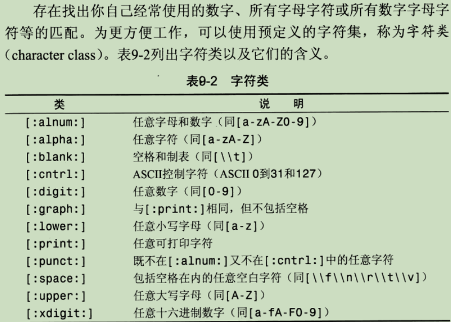 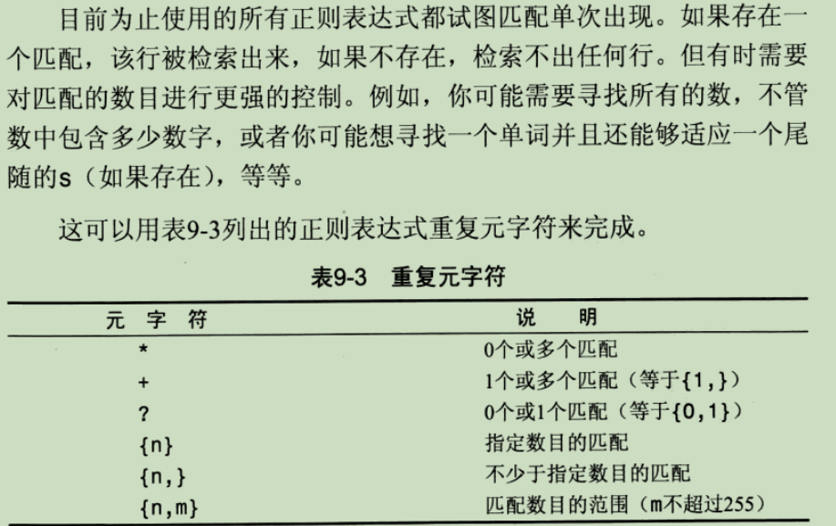
eg.
"\\([0-9] sticks?\\)": 匹配包含形如 "(1 stick)" 或者 "(2 stciks)"文本的列值
"[[:digit:]]{4}"：匹配连在一起的任意4位数字
"^[0-9\\.]"：匹配以数字或小数点开始的文本
CASE WHEN
Show the name and the continent - but substitute Eurasia for Europe and Asia; substitute America - for each country in North America or South America or Caribbean. Show countries beginning with A or B
select name,
CASE
WHEN continent in ('Europe', 'Asia') THEN 'Eurasia'
WHEN continent in ('North America','South America', 'Caribbean') THEN 'America'
ELSE continent
END
from world
where name like 'A%' or name like 'B%'
/*
Put the continents right...
Oceania becomes Australasia
Countries in Eurasia and Turkey go to Europe/Asia
Caribbean islands starting with 'B' go to North America, other Caribbean islands go to South America
Show the name, the original continent and the new continent of all countries.
*/
select name,continent,
case when continent in ('Eurasia', 'Turkey') then 'Europe/Asia'
when continent ='Oceania' then 'Australasia'
when continent='Caribbean' then
case when name like 'B%' then 'North America'
else 'South America'
end
else continent
end
from world
计算字段
运行时在SELECT语句内创建，例如嵌套子查询或者通过组合字段(即 column)来格式化检索输出结果
- Concat()拼接子串
- 删除空格，RTrim()去除串右侧空格，LTrim()去除串右侧空格，Trim()去除两侧空格
- AS，可以为Concat()得到的结果创建一个列别名，方便客户机使用
- 可以在计算字段中指向算术计算
- ROUND(), returns f rounded to p decimal places
SELECT Concat(Rtrim(vend_name), '(', RTrim(vend_country), ')') AS vend_title FROM vendors;
SELECT quantity*item_price AS expanded_price FROM orderitems;
- 关于null
1、如果要求查询条件不满足时，输出null，有以下几种处理方法: eg: 返回第2高薪资，没有时返回null(例如只有一条记录或者记录中薪资全部相同) // 因为select null 返回null select (select distinct salary from employee order by salary desc limit 1, 1) as SecondHighestSalary 或 // IFNULL(expr1,expr2)的用法： // 假如expr1 不为 NULL，则 IFNULL() 的返回值为 expr1; 否则其返回值为 expr2。 select IFNULL( (select distinct salary from employrr order by salary desc limit 1, 1), null ) as HighestSecondSalary
数据处理函数
- 文本处理函数: Trim(), Upper(), Lower(), Soundex()等；其中Soundex可以将文本串转为描述其语音表示的字母数字模式的算法，考虑了类似的发音字符和音节，使得对串进行发音比较而不是字符比较。
# 匹配所有发音类似‘Lee’的cust_name
SELECT cust_name, cust_contact FROM customers WHERE Soundex(cust_name)=Soundex('Lee')
- 日期和时间处理函数
MySQL使用的默认日期格式为yyyy-mm-dd, datetime类型除了日期还包括时间值，hh-mm-ss
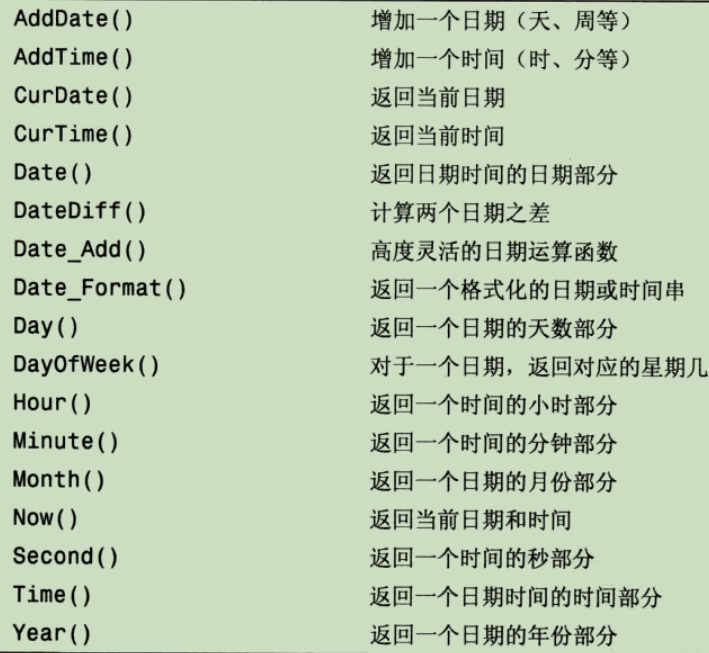
# 检索2005年9月所有订单
SELECT cust_id, order_num FROM orders WHERE DATE(order_date) BETWEEN '2005-09-01' AND '2005-09-30';
SELECT cust_id, order_num FROM orders WHERE Year(order_data)=2005 AND Month(order_date)=9;
-
数值处理函数
仅用来处理数值数据，用于代数、三角函数计算。如Abs()、Cos()、Sin()、Pi()、Rand()、Mod()、Sqrt()、Exp(). -
开窗函数
从mysql 8.0开始支持
1、语法结构 <开窗函数> over ([PARTITION by <列清单>] Order by <排序用列清单>） 语句中，PARTITION By 指定排序的对象范围，含义上类似Group By, 但不会将结果聚合在一起, 而是相同列清单的数据紧挨一起，期间顺序通过 order by进行指定 order by 指定了按照哪一列，何种顺序进行排列（纵向定义排序规则） 2、常用开窗函数包括聚合函数和下面几种专用开窗函数 row_number()：依次递增排名，无重复排名 rank()：相同分数有重复排名，但是重复后下一个人按照实际排名 dense_rank()：分数一致排名一致，分数不一致排名+1 NTILE(4)：分组排名，里面的数字是几，最多排名就是几，里面的数字是4，最多的排名就是4
聚合函数(aggregate function)
- 用于对表中数据进行汇总，但无需返回实际表项数据，如满足条件的行数，表列的最大/小值等。
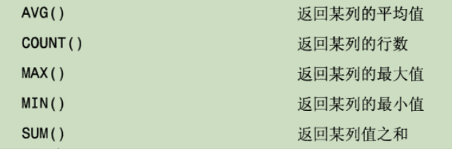
若某行的score值为null时，计算平均值时会忽略带有null值的那一行。如果想要把null当做0，那么可以使用IsNull函数把null转换成0，语法如下： avg(IsNull(score，0)） as 'Average Score'
# AVG只能用于单个列，为获得多个列，必须使用多个AVG函数
SELECT AVG(prod_price) AS avg_price WHERE vend_id=100;
# COUNT(*) 统计表中行的数目，即使列值为NULL，而COUNT(column)对特定列中具有值得行进行统计，忽略NULL
# 利用标准算术操作符，可以在多个列上进行计算; SUM会忽略列值为NULL的行
SELECT SUM(item_price*quantity) AS total_price FROM orderitems WHERE order_num=200;
- 聚集不同值: 上述五个聚集函数可以对相应的列指定ALL或DISTINCT关键字，前者表示对所有的行执行筛选；后者只对值不同的行进行筛选。ALL可以不用指定，是默认行为。
- SELECT语句可以包含多个聚集函数。
SELECT COUNT(*) AS num_items, MIN(prod_price) AS price_min, AVG(prod_price) AS avg_price FROM products;
自定义函数
delimiter 自定义符号 -- 如果函数体只有一条语句, begin和end可以省略, 同时delimiter也可以省略 create function 函数名(形参列表) returns 返回类型 -- 注意是retruns； 形参列表形式：形参名，形参类型， 例如 a INT begin 函数体 -- 函数内定义的变量如：set @x = 1; 变量x为全局变量，在函数外面也可以使用； -- 使用declare定义局部变量， 例如 declare i int default 1; -- 修改变量值: set i = i+1; return (-- 这里可以写SQL语句); end 自定义符号 delimiter ;
分组数据
-
创建分组: GROUP BY 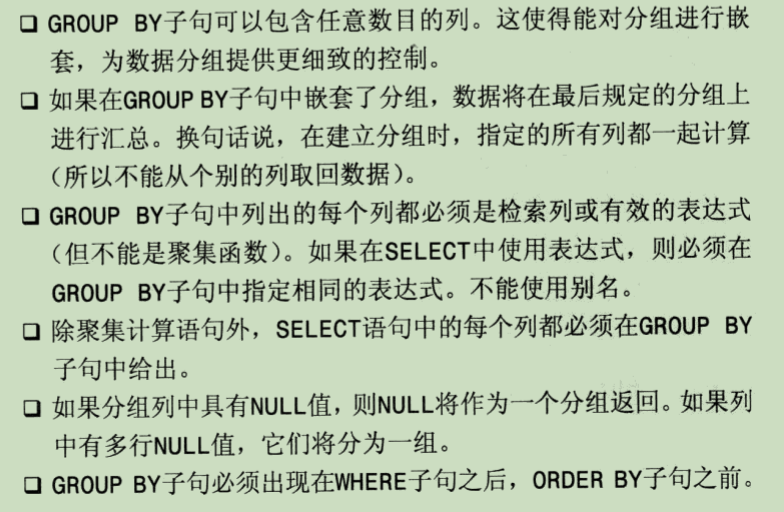
-
过滤分组: HAVING
HAVING子句类似WHERE，WHERE子句可以用HAVING代替，两者区别在于:
WHERE只能过滤行，且其在分组前进行过滤，而HAVING基于分组的聚合值而不是特定行的值来过滤数据，主要用来过滤分组。
WHERE子句不可以包含聚合函数，HAVING 子句中的条件可以包含聚合函数。
HAVING 子句是在数据分组后进行过滤，WHERE 子句会在数据分组前进行过滤。WHERE 子句排除的行不包含在分组中，可能会影响 HAVING 子句基于这些值过滤掉的分组。
使用GROUP BY时，select 后面的所有列中,没有使用聚合函数的列,必须出现在 group by 后面
SELECT vend_id, COUNT(*) AS num_prods FROM products GROUP BY vend_id;
SELECT cust_id, COUNT(*) AS orders FROM orders GROUP BY cust_id HAVING COUNT(*)>=2;
SELECT vend_id, COUNT(*) AS num_prods FROM products WHERE prod_price>=10 GROUP BY vend_id HAVING COUNT(*)>=2;
SELECT order_num, SUM(quantity*item_price) AS ordertotal
FROM orderitems
GROUP BY order_num
HAVING SUM(quantity*item_price)
ORDER BY ordertotal;
子查询
嵌套在其他查询中的查询。
SELECT cust_name,cust_contact FROM customers WHERE cust_id IN (
SELECT cust_id FROM orders WHERE order_num IN (
SELECT order_num FROM orderitems WHERE prod_id='TNT2'
)
);
SELECT cust_name, (SELECT COUNT(*) FROM orders WHERE orders.cust_id=customere.cust_id) AS num_orders
FROM customers ORDER BY cust_name;
联结
是一种机制，用于在SELECT中关联表，可以联结多个表返回一组输出，联结在运行时关联表中的行。
# 通过where子句实现联结
SELECT vend_name, prod_name, prod_price FROM vendors, products
WHERE vendors.vend_id=products.vend_id
ORDER BY vend_nam, prod_name;
# 叉联结/笛卡尔积，由没有联结关系的表返回的结果为笛卡尔积
# 检索的行的数目将是第一个表的行数乘以第二个表的行数
SELECT vend_name, prod_name, prod_price FROM vendors, products
ORDER BY vend_nam, prod_name;
# 等值联结/内部联结，基于两个表之间的相等测试，通过where子句实现的就是这种联结
# 不过也可用其他语法(INNER JOIN)来指明联结关系, 此时只能用ON传递联结条件
SELECT vend_name, prod_name, prod_price
FROM vendors INNER JOIN products
ON vendors.vend_id=products.vend_id
# 联结多个表，SQL对于联结的表数量没有限制
# 下面用联结实现之前的子查询
SELECT cust_name, cust_contact FROM customers, orders, orderitems
WHERE customers.cust_id=orders.cust_id AND orders.order_num=orderitems.order_num
AND prod_id='TNT2';
# 使用表别名，简化语句，表别名只在查询中使用，不返回客户机
# 表别名在 FROM 子句中定义，可用在 SELECT、WHERE、ORDER BY 等子句中
SELECT cust_name, cust_contact FROM customers AS c, orders AS o, orderitems AS oi
WHERE c.cust_id=o.cust_id AND o.order_num=oi.order_num
AND prod_id='TNT2';
# 自联结，在单条语句值多次引用相同的表
# 通过表别名来避免二义性，从而将同一个表看成新表，和自身联结
# 下面是查询提供DTNTR的供货商提供的所有产品
SELECT p1.prod_id, p1.prod_num FROM products AS p1, products AS p2
WHERE p1.vend_id=p2.vend_id AND p2.prod_id='DTNTR';
# 外部联结，联结包含了那些在相关表中没有关联行的行
# 例如统计每个用户的订单，包括那些没有订单的用户(其在订单表中不存在关联的行)
# OUTER JOIN指明属于外部联结，LEFT指明是左侧的customers包含所有的行；
# 若是使用 RIGHT，则是右侧的order表所有的行，返回结果是那些下了订单的用户的行。
# order_num代表的是订单 id, 而非数量
SELECT customers.cust_id, order_num FROM customers LEFT OUTER JOIN orders
ON customers.cust_id=orders.cust_id;
# 下面则是统计每个用户的订单数量，采用聚集函数的外部联结
SELECT customers.cust_id, COUNT(order_num) AS num_ord FROM customers LEFT OUTER JOIN orders
ON customers.cust_id=orders.cust_id
GROUP BY customers.cust_id;

组合查询
在单个查询中从不同的表返回类似结构的数据
对单个表执行多个查询，按单个查询返回数据
可使用 UNION 操作符组合数条SQL查询，其效果与具有多个WHERE子句条件的查询完成的工作相同，具体使用哪种方式简便、高效需要经过测试。
UNION必须由两条或多条SELECT语句组成，语句之间通过UNION分隔； UNION的每个查询必须包含相同的列、表达式、聚集函数； 列类型必须兼容，即DBMS可以隐式转换的类型 UNION默认会去除多条查询语句返回中重复的行，使用UNION ALL可以返回所有匹配行，包括重复行。 对组合结果排序，只能在最后一条SELECT语句之后使用 ORDER BY。
SELECT vend_id, prod_id, prod_price FROM proucts
WHERE prod_price <=5
UNION
SELECT vend_id, prod_id, prod_price FROM proucts
WHERE vend_id in (1000, 1005);
全文本搜索 MyISAM引擎支持，而InnoDB不支持(5.7版本开始支持)。
相较于通配符和正则表达式尝试匹配表中所有行，无法明确控制匹配条件，以及不能提供智能化的搜索结果，
全文本搜索可以解决这些问题。
启用全文本搜索，MySQL会创建指定列中各词的一个索引，搜索时会针对这些词进行。
一般在创建表时启用全文本搜索，
CREATE TABLE productnotes(
note_text text NULL,
FULLTEXT(note_text)
)ENGINE=MyISAM;
FULLTEXT可以索引多个列，定义之后，MySQL会自动维护索引。使用Match()和Against()执行全文本搜索。
全文本搜索的一个重要部分就是对结果排序，具有较高等级的行先返回
# 传递给Match()的值必须与FULLTEXT中的定义相同，且次序相同，即使不搜索某个列，也要列出来
# 搜索不区分大小写，除非使用BINARY。
SELECT note_text FROM productnotes
WHERE Match(note_text) Against('rabbit');
查询扩展 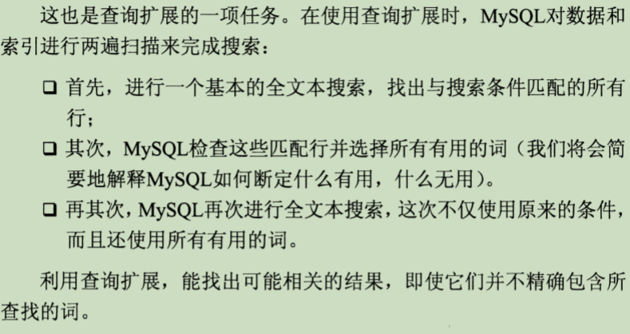
SELECT note_text FROM productnotes
WHERE Match(note_text) Against('anvils' WITH QUERY EXPANSION);
布尔文本搜索 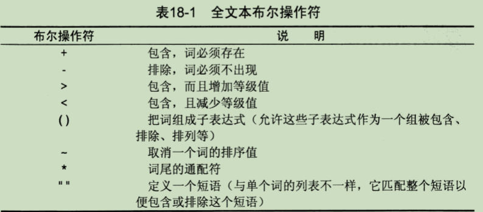
# 匹配包含anvils但不包含任意以rope开头的词的行
SELECT note_text FROM productnotes
WHERE Match(note_text) Against('anvils -rope*' IN BOOLEAN MODE);
# 匹配短语rabbit bait而非两个单独的单词
SELECT note_text FROM productnotes
WHERE Match(note_text) Against('"rabbit bait"' IN BOOLEAN MODE);
# 匹配safe和combination，但降低后者的等级
SELECT note_text FROM productnotes
WHERE Match(note_text) Against('+safe +(<combination)' IN BOOLEAN MODE);
数据插入
# 按创建表时列的顺序，插入列值
INSERT INTO tbl_name VALUES(..);
# 根据第一个()内提供的列名来选择插入，顺序不需按照创建顺序，且可以省略某些列(要求该列允许NULL或者有默认值)
INSERT INTO tbl_name(col_name1, ..) VALUES(col_value1,..)
# 插入多行, 可以使用多条INSERT语句，一次提交，中间用‘;’隔开,
# 或者如下, 要求INSERT语句中列名和次序相同，这种方式性能也要更好
INSERT INTO tbl_name(col_name1, ..) VALUES(col1_value,..), (col1_value2, ..);
# 插入检索出的数据, 将从其他表中检索到的数据插入表中
# 检索的列对应被插入表的每一列
INSERT INTO tbl_name(col_name, ..)
SELECT tbl_nameX, .. FROM tbl_name_new WHERE ..;
更新数据
# IGNORE, 在更新多行时，如果某一行更新错误，使用IGNORE关键字可以避免之前发生更新的行恢复到原值
UPDATE IGNORE tbl_name
SET col_name='xx'
col_name2='xx'
WHERE ..; # 若缺少WHERE子句则会更新所有行
# 删除某些行的一列的值
UPDATE tbl_name
SET col_name=NULL
WHERE ..;
删除数据
# 删除特定的行, 若想删除列，需要通过UPDATE来更新该列值为NULL。
DELETE FROM tbl_name;
WHERE ..;
# 从表中删除所有行，实际上是删除原表，并重新创建；
# DELETE FROM tbl_name;则是逐行删除
TRUNCATE tbl_name;
MySQL没有撤销操作，应十分小心使用UPDATE和DELETE
创建和操作表
# cust_id 和cust_name两列不允许为空；
# 其中cust_id设置为自增，可以在插入时不提供值，由MySQL自动提供
# 每个表只能有一个列设置AUTO_INCREMENT
# 插入时也可以为这样的列设置一个从未用过的值，后续将从新值开始递增
# 使用last_insert_id()可以获得最后一次递增得到的AUTO_INCREMENT值；
# 可以使用' DEFAULT xx '在'NULL, '后，为该列提供一个默认值；
CREATE TABLE customers IF NOT EXISTS # IF NOT EXISTS 表示仅在customers表不存在时创建，否则跳过
(
cust_id int NOT NULL AUTO_INCREMENT,
cust_name char(50) NOT NULL ,
cust_address char(50) NULL ,
cust_city char(50) NULL ,
cust_state char(5) NULL ,
cust_zip char(10) NULL ,
cust_country char(50) NULL ,
cust_contact char(50) NULL ,
cust_email char(255) NULL ,
PRIMARY KEY (cust_id) # 指定主键, 括号内可以包含多个列
) ENGINE=InnoDB;
# 通过 ALTER TABLE 更新表，可以新增列，删除旧列(DROP COLUMN col_name)，以及定义外键
ALTER TABLE tbl_name
ADD col_name, col_type;
# 为tbl_name.col_name1施加外键tbl_name2.col_name2约束
ALTER TABLE tbl_name
ADD CONSTRAINT fk_name FOREIGN KEY (col_name1) REFERENCES tbl_name2(col_name2);
# 删除外键
ALTER TABLE tbl_name
DROP FOREIGN KEY fk_name;
# 删除表
DROP TABLE tbl_name;
# 重命名表
RENAME TABLE old_tbl TO new_tbl, old_tbl2 TO new_tbl2;
ENGINE:MySQL常用的引擎包括InnoDB(一种事务处理引擎，不支持全文本搜索)、MyISAM(性能极高，支持全文本处理，不支持事务处理)、MEMORY(功能等同MyISAM，但由于数据存储在内存而非磁盘中，速度很快，适用于临时表)，在一个数据库中，不同表可以采用不同的引擎。
补充
# SELECT 可以省略 FROM 子句以便简单访问和处理表达式，从而进行测试和实验
SELECT 2*3; # 返回6
SELECT Trim(' abc '); # 返回'abc'
set names gbk; # 设置MYSQL显示字符集，CMD默认编码为GBK，通过此设置，可以显示中文
视图
-
视图是虚拟的表，与包含数据的表不同，视图只包含使用时动态检索数据的查询，提供了一种SELECT语句层次的封装，用以简化数据处理以及重新格式化基础数据或包含基础数据。
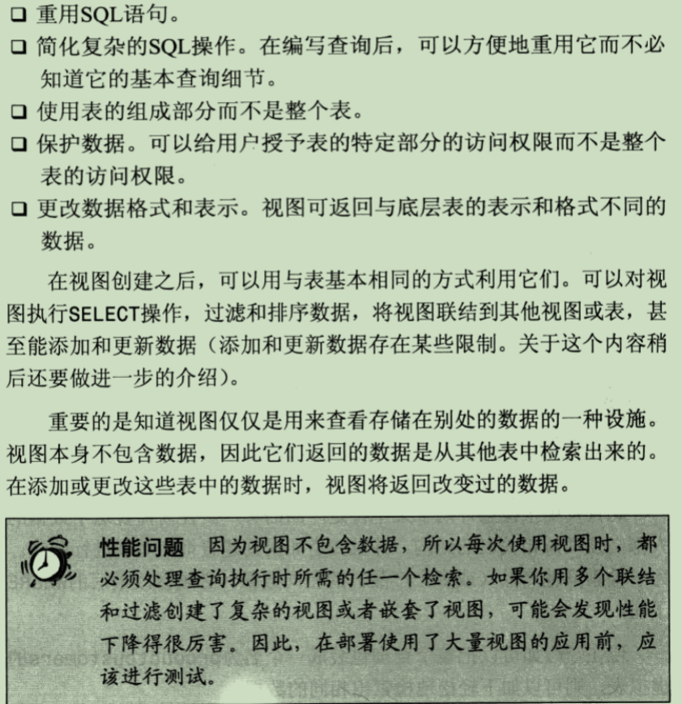 -
视图的规则和限制
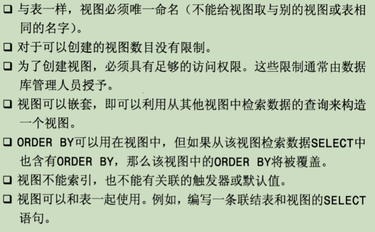
# 创建视图，productcustomers联结三个表
CREATE VIEW productcustomers AS
SELECT cust_name, cust_contact, prod_id FROM customers, orders, orderitems
WHERE customers.cust_id=orders.cust_id AND orders.order_num=orderitems.order_num;
# 删除视图
DROP VIEW viewname;
# 查看创建视图语句
SHOW CREEATE VIEW viewname;
- 更新视图：可以对视图使用INSERT、UPDATE 、DELETE来进行更新(实际上是在更新基表)，不过当视图定义中包含以下操作时，则不能进行更新:
分组(GROUP BY和HAVING)、联结、子查询、并(UNION)、聚集函数、DISTINCT、导出(计算)列
存储过程
- 保存的一条或多条MySQL语句的集合。
- 优点: 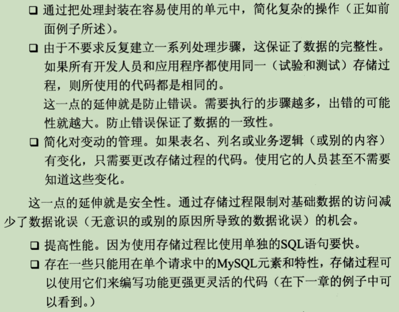
CREATE PROCEDURE productpricing() # ()内是存储过程接收的参数
BEGIN
SELECT Avg(pord_price) AS priceaverage
FROM products;
END;
# 注意创建存储过程结束时的';'属于存储过程的一部分，代表MySQL语法中的分隔符；
# 一般在命令行运行SQL语句时结尾的';'是则是命令行语句分隔符；
# 在命令行中创建过程时内部的';'不会被解释为存储过程的成分；
# 可以在创建前采用 DELIMETER \\ 临时更改命令行语句分隔符为'\\'
DELIMETER \\
CREATE PROCEDURE productpricing() # ()内是存储过程接收的参数
BEGIN
SELECT Avg(pord_price) AS priceaverage
FROM products;
END \\
DELIMETER ; # 恢复原来的分隔符
CALL productpricing(); # 调用存储过程
DROP PROCEDURE pro_name IF EXISTS; # 删除存储过程， 后面的IF EXISTS保证删除时即使不存在也不会报错
SHOW CREATE PROCEDURE pro_name; #显示存储过程创建语句
SHOW PROCEDURE STATUS like 'pro_name'; # 显示存储过程信息列表
- 使用参数
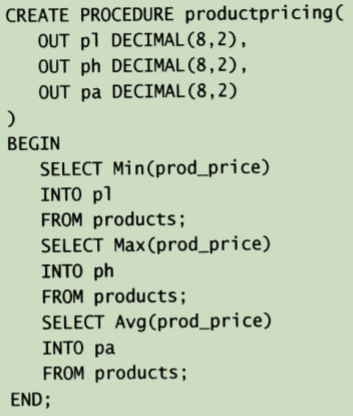
参数传递类型: OUT(从存储过程传出，相当于返回变量)、IN(传递给存储过程，相当于传入参数)、INOUT(对存储过程传入、传出，相当于引用参数). (因此存储过程其实类似自定义的查询函数)
INTO把检索结果保存到指定变量。
因为不允许通过一个参数返回多个行和列，因此前面要采用3个参数。
CALL productpricing(
@pricelow, @pricehigh, @priceaverage
);
# 调用后，并不显示结果，结果存储在相应的变量中
SELECT @pricelow; # 显示结果
CREATE PROCEDURE ordertotal(
IN onumber INT, OUT total DECIMAL (8, 2)
)
BEGIN
SELECT Sum(quantity*item_price)
FROM orderitems
WHERE order_num=onumber
INTO total;
END;
CALL ordertotal(20005, @total);
SELECT @total;
--代表注释；DECLARE定义局部变量，指定变量名和数据类型； 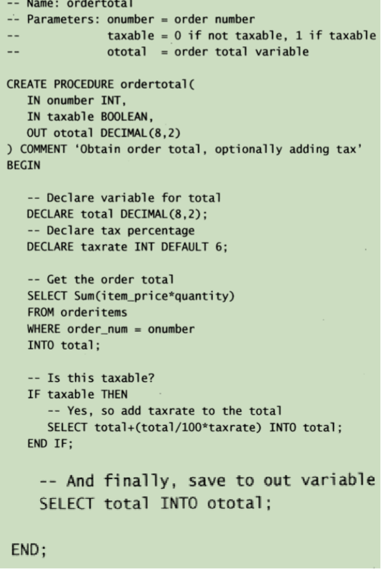
游标
。。。
触发器
在表发生改动且满足响应条件时自动执行，只能为响应DELETE、INSERT、UPDATE的SQL语句或者位于BEGIN和END之内的一组语句。
只有表才支持TRIGGER，VIEW和临时表都不支持。
# 触发器名最好在数据库中唯一(MySQL5允许不同的表有相同的trigger name)
# BEFORE 和 AFTER，触发器被触发的时刻。若希望验证新数据是否满足条件，则使用 BEFORE 选项；
# 若希望在激活触发器的语句执行之后完成几个或更多的改变，则通常使用 AFTER 选项
# FOR EACH ROW 一般是指行级触发，对于受触发事件影响的每一行都要激活触发器的动作
# 触发器动作主体，包含触发器激活时将要执行的 MySQL 语句。如果要执行多个语句，可使用 BEGIN…END 复合语句结构
# 每个表最多支持6个TRIGGER(insert\update\delete的before和after)
CREATE <触发器名> < BEFORE | AFTER >
<INSERT | UPDATE | DELETE >
ON <表名> FOR EACH Row<触发器主体>
# MySQL5以后不允许TRIGGER返回结果集，这里只能将结果赋给变量
CREATE TRIGGER newproduct AFTER INSERT ON products
FOR EACH ROW SELECT 'Product added' INTO @result;
SELECT @result;
# 删除触发器
DROP TRIGGER tri_name;
# 在INSERT TRIGGER代码内，可引用一个名为NEW的虚拟表
# 而在DELETE TRIGGER代码内，可引用一个名为OLD的虚拟表，访问被删除的行
CREATE TRIGGER neworder AFTER INSERT ON orders
FOR EACH ROW SELECT NEW.order_num INTO @result;
事物处理
用以维护数据库的完整性，它保证成批的MySQL操作要么完全执行，要么完全不执行。
SELECT * FROM tbl;
START TRANSACTION; # 开始一个事物处理
DELETE TABLE tbl;
DELETE TABLE tbl2;
ROLLBACK; # 回退到事物开始之前，SELECT\CREATE\DROP这三种语句无法回退
COMMIT; # 手动提交，如果 DELETE 出错,则自动撤销提交
# 使用保留点，实现部分回退， 保留点在事物处理完成(ROLLBACK 或 commit)后自动释放
SAVEPOINT pos1;
ROLLBACK pos1; # pos1之后的语句不会被执行
# 关闭默认提交
SET autocommit=0;
字符集和校对顺序
- 字符集为字母和符号的集合
编码为某个字符集的内部表示
校对为规定字符如何比较的指令, 在ORDER BY\GROUP BY等检索排序时有用。
SHOW CHARACTER SET;
SHOW COLLATION; # 显示校对列表
# 确定数据库使用的字符集和校对
SHOW VARIABLES LIKE 'character%';
SHOW VARIABLES LIKE 'collation%';
#在创建表时指定字符集或者校对，甚至允许对列进行设置
CREATE TABLE tbl{
xx,
column VARCHAR(10) CHARACTER SET BIG5 COLLATE big5_chinese_ci
}DEFAULT CHARACTER SET latine
COLLATE xx;
# 可以在SELECT时指定与创建时不同的校对
SELECT * FROM tbl ORDER BY x COLLATE XX;
管理用户
# IDENTIFIED BY 'p@$$w0rd' 指定用户登录密码(或称口令)
CREATE USER name IDENTIFIED BY 'p@$$w0rd';
RENAME USER old_name TO new_name;
DROP USER name;
# 查看用户账号权限, host表示主机名，只提供username时，则默认主机名为%，表示不管主机名
SHOW GRANTS FOR username@host;
SHOW GRANTS FOR root@localhost;
# 授予用户权限; 授予用户在db_name的所有表上查询的权限
GRANT SELECT ON db_name.* TO username;
# 撤销权限
REVOKE SELECT ON db_name.* FROM username;
# 更改密码
SET PASSWORD FOR username = Password('new password');